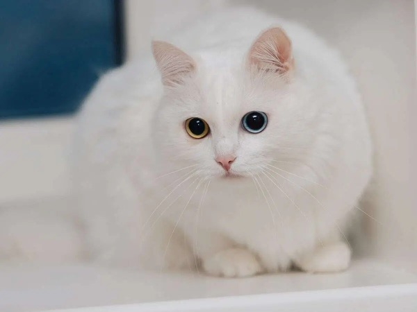

Cat Species

The Bengal cat is a breed of hybrid cat created from crossing of an Asian leopard cat with domestic cats, especially the spotted Egyptian Mau.

The Turkish Angora is a breed of domestic cat. Turkish Angoras are one of the ancient, natural breeds of cat, having originated in central Anatolia (Ankara Province in modern-day Turkey).

The Siamese cat is one of the first distinctly recognised breeds of Asian cat. It derives from the Wichianmat landrace. The Siamese cat is one of several varieties of cats native to Thailand.